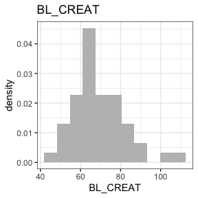
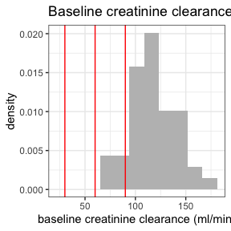
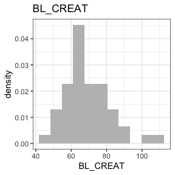
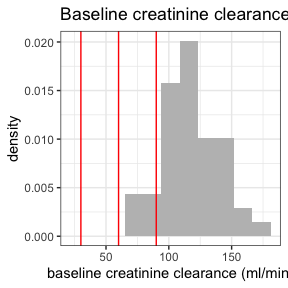

This is a package to create NONMEM input file (NIF) objects from SDTM-formatted clinical study data.
Installation
You can install the development version of nif like this:
devtools::install_github("rstrotmann/nif", build_vignettes=TRUE)Example
Generate a NIF data set
This is a very basic example using sample SDTM data from a fictional single ascending dose study to create a NIF data set using make_nif():
library(nif)
library(tidyverse)
sdtm <- examplinib_sad
nif <- new_nif() %>%
add_administration(sdtm, "EXAMPLINIB", analyte = "RS2023") %>%
add_observation(sdtm, "pc", "RS2023", analyte = "RS2023")
head(nif)
#> REF ID STUDYID USUBJID AGE SEX RACE HEIGHT WEIGHT BMI
#> 1 1 1 2023000001 20230000011010001 54 0 WHITE 178.1 74 23.32942
#> 2 2 1 2023000001 20230000011010001 54 0 WHITE 178.1 74 23.32942
#> 3 3 1 2023000001 20230000011010001 54 0 WHITE 178.1 74 23.32942
#> 4 4 1 2023000001 20230000011010001 54 0 WHITE 178.1 74 23.32942
#> 5 5 1 2023000001 20230000011010001 54 0 WHITE 178.1 74 23.32942
#> 6 6 1 2023000001 20230000011010001 54 0 WHITE 178.1 74 23.32942
#> DTC TIME NTIME TAFD TAD PCELTM EVID AMT ANALYTE CMT PARENT
#> 1 2000-12-30 10:20:00 0.0 0.0 0.0 0.0 <NA> 1 5 RS2023 1 RS2023
#> 2 2000-12-30 10:20:00 0.0 0.0 0.0 0.0 PT0H 0 0 RS2023 2 RS2023
#> 3 2000-12-30 10:50:00 0.5 0.5 0.5 0.5 PT0.5H 0 0 RS2023 2 RS2023
#> 4 2000-12-30 11:20:00 1.0 1.0 1.0 1.0 PT1H 0 0 RS2023 2 RS2023
#> 5 2000-12-30 11:50:00 1.5 1.5 1.5 1.5 PT1.5H 0 0 RS2023 2 RS2023
#> 6 2000-12-30 12:20:00 2.0 2.0 2.0 2.0 PT2H 0 0 RS2023 2 RS2023
#> TRTDY METABOLITE DOSE DV MDV ACTARMCD IMPUTATION
#> 1 1 FALSE 5 NA 1 C1 admin time imputed from PCRFTDTC
#> 2 1 FALSE 5 0.0000 0 C1
#> 3 1 FALSE 5 1.7829 0 C1
#> 4 1 FALSE 5 7.1328 0 C1
#> 5 1 FALSE 5 13.7709 0 C1
#> 6 1 FALSE 5 16.6334 0 C1In many cases, you may want to add further covariates, e.g., baseline creatinine from the LB domain:
nif <- nif %>%
mutate(COHORT = ACTARMCD) %>%
add_baseline(sdtm, "lb", "CREAT") %>%
add_bl_crcl()Data exploration
The nif package provides a range of functions to explore and summarize NIF files:
summary(nif)
#> ----- NONMEM input file (NIF) object summary -----
#> Data from 48 subjects across one study:
#> STUDYID N
#> 2023000001 48
#>
#> Males: 48, females: 0 (0%)
#>
#> Renal impairment class:
#> CLASS N
#> mild 4
#> normal 44
#>
#> Administered drugs:
#> RS2023
#>
#> Analytes:
#> RS2023
#>
#> Subjects per dose levels:
#> COHORT RS2023 N
#> C1 5 3
#> C10 500 12
#> C2 10 3
#> C3 20 3
#> C4 50 3
#> C5 100 6
#> C6 200 3
#> C7 500 6
#> C8 800 6
#> C9 1000 3
#>
#> 816 observations:
#> CMT ANALYTE N
#> 2 RS2023 816
#>
#> Subjects with dose reductions
#> RS2023
#> 0
#>
#> Treatment duration overview:
#> PARENT min max mean median
#> RS2023 1 1 1 1
invisible(capture.output(
summary(nif) %>%
plot()
))


 

Further information
For further guidance see the help for individual functions and the project website on github pages.